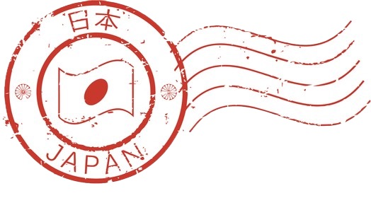

Home · 2026-10-17 · Minute, Part, Divide
ふん fun ぶん bun
Usage: 分 commonly expresses “minute / part / divide” in written Japanese.
Example: 十分 (じゅうぶん, jūbun): sufficient; 分別 (ぶんべつ, bunbetsu): sorting
Stroke order
fu
n
bu
n

G Fonts Japanese types